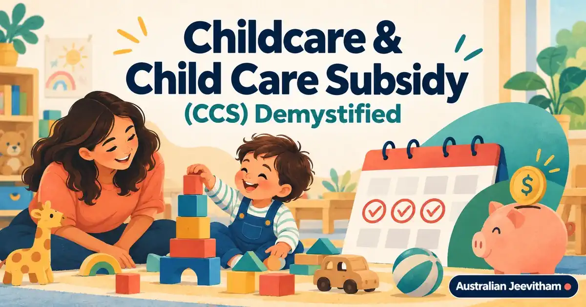

Childcare, Child Care Subsidy എളുപ്പത്തിൽ മനസ്സിലാക്കാംChildcare & Child Care Subsidy (CCS) Demystified
Childcare place കിട്ടുന്നതും CCS eligibility ലഭിക്കുന്നതും രണ്ടു വ്യത്യസ്ത കാര്യങ്ങളാണ്. From 5 January 2026, the 3 Day Guarantee gives all CCS-eligible families at least 72 subsidised hours per fortnight, but it does not guarantee a childcare vacancy and it does not remove the gap fee.
By Binu Vadakkedath
Published and last updated: September 2026 · Verify current requirements with the linked official authorities

Check residence and immunisation rules before care begins. Claim approval, provider enrolment confirmation വൈകിയാൽ full fee നൽകേണ്ടി വരാം.
- CCS
- 3 Day Guarantee
- 72 Hours
- AIR
- Gap Fee
This guide is general information, not migration, legal, education, employment or financial advice. Rules, fees, occupation lists and assessment processes can change. Verify your circumstances with the official authority and use a registered migration agent or qualified professional where personal advice is required. തീരുമാനം എടുക്കുന്നതിന് മുമ്പ് official website-ലെ ഏറ്റവും പുതിയ വിവരങ്ങൾ പരിശോധിക്കുക.
1. Who can receive CCS
General requirements include caring for a child aged 13 or under who is not attending secondary school, using an approved child care service, being responsible for the fees, and meeting residence and immunisation rules. Exemptions can apply in limited situations.
Most temporary visa holders are not eligible. Services Australia lists the residence categories and special circumstances that qualify, so check your visa status before estimating costs.
2. The 3 Day Guarantee from 2026
From 5 January 2026, all CCS-eligible families can receive at least 72 hours of subsidised care per fortnight. Up to 100 hours can apply where recognised participation exceeds 48 hours per fortnight, an exemption applies, or the child meets specified categories including First Nations children.
The guarantee is about subsidised hours. It does not reserve a place at a service and does not mean care is free.
3. How the amount is calculated
The subsidy depends on family income, the hourly rate cap for the care type, eligible hours and family circumstances. The government normally pays CCS directly to the provider, and the family pays the remaining gap fee.
Centre fee hourly cap-നെക്കാൾ കൂടുതലാണെങ്കിൽ difference കുടുംബം നൽകണം. Provider quote-ൽ daily fee, session length, inclusions, gap fee എന്നിവ ചോദിക്കുക.
2026–27 Child Care Subsidy (CCS) Income Thresholds
The Australian Government indexed the income thresholds for the 2026–27 CCS year, which applies from 6 July 2026. If your combined family income is $88,520 or less, your subsidy rate is 90%. The subsidy gradually decreases as your income increases. Families earning below $538,520 may still be eligible for some subsidy, while families earning $538,520 or more receive 0%.
How to Claim the Subsidy
- Step 1: Link your Centrelink account to MyGov.
- Step 2: Complete the Child Care Subsidy assessment claim online.
- Step 3: Confirm your child's enrolment details once the child care centre submits them.
4. Claim and enrolment steps
- Make a CCS claim through myGov linked to Centrelink.
- Give the provider accurate Customer Reference Numbers and family details.
- Confirm the enrolment notice in your online account.
- Check that sessions and absences appear correctly.
- Update income estimates and circumstances promptly.
A claim can generally be backdated no more than 28 days before submission. Do not delay on the assumption that all earlier fees will be covered.
5. Immunisation and choosing care
Services Australia checks immunisation status through the Australian Immunisation Register. Take translated overseas records to an Australian vaccination provider so eligible doses can be recorded and catch-up needs assessed.
Compare long day care, family day care, preschool or kindergarten and in-home care where eligible. Use StartingBlocks.gov.au to search services and review quality information, then visit the service and ask about waiting lists, orientation, food, sleep and fees.
Official sources and current checks
ഈ ലേഖനത്തിലെ പ്രധാന വിവരങ്ങൾ പരിശോധിക്കാൻ താഴെയുള്ള official links ഉപയോഗിക്കുക. Fees, processing times, eligibility എന്നിവ മാറാം.
Frequently asked questions
Does the 3 Day Guarantee give every child a childcare place?
No. It gives CCS-eligible families at least 72 subsidised hours per fortnight. Availability still depends on the provider and waiting list.
Are most temporary visa holders eligible for CCS?
No. Residence rules apply, with specific eligible categories and special circumstances listed by Services Australia.
Does CCS make childcare free?
Usually not. Families generally pay a gap fee, and charges above the applicable hourly rate cap are not covered by CCS.
How far can a CCS claim be backdated?
A claim can generally be backdated no more than 28 days before the date it was submitted.
Skills assessments, settlement & life after PR

AHPRA Nursing Registration
A step-by-step roadmap for internationally qualified nurses covering Stream B, OBA, NCLEX-RN, OSCE, and English requirements.
- AHPRA / NMBA
- NCLEX & OSCE
- Healthcare

Renting Your First Home
Rental applications, inspections, state-specific bond rules, condition reports, and tenancy resources for new arrivals.
- Bond Rules
- Inspections
- Tenant Rights

Malayalam Resources Hub
A comprehensive directory of guides covering jobs, visas, healthcare registration, licence conversion, superannuation, and settling into Australia.
- 11+ Guides
- Jobs & Visas
- Settlement